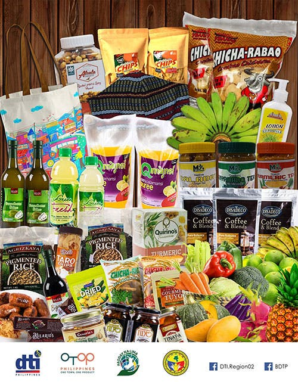
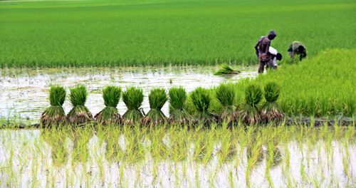
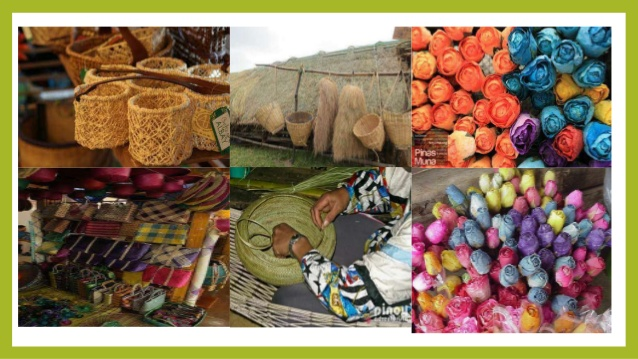
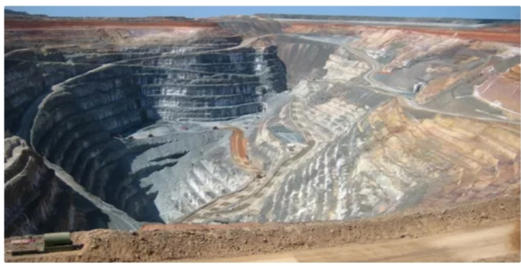

<!DOCTYPE>
<body text="white">
<body style="background-image:url('niyog.jpg') ;background-repeat: no-repeat; background-attachment: fixed; background-size: 100% 100%;">
<center>

<align="left"><align="right">

<hr><i><b><h2><TITTLE><font color="white"><font size="10">AGRICULTURAL PRODUCTS</font size></font color></tittle></b></h2></i><hr>
<p><font color="white"><font size="8"></font></p>
</center>
<body>
<p>&nbsp;</p>

	<dl><font size="8">CORN</font></dl>
	<dd><font size="6">Corn is one of the primary commodities in Region 02 particularly in <i><strong>Isabela Province</strong></i>.  In fact, the City of Ilagan was declared as the “Corn Capital of the Philippines”. Through the Cagayan Valley Research Center (CVRC) located in the province, a number of Open Pollinated Varieties (OPVs) were developed with the aim of improving the yield and income of corn farmers most especially those using said varieties. The department’s vision in making every farmer agri-preneurs greatly influenced the initiative of CVRC in its product development undertakings. Also, to develop innovative products as identity of the province being the no. 1 producer in the Philippines.</font></dd>
	
<dl><font size="8">MINERALS</font></dl>
	<dd><font size="6">Large deposits of both metallic and non-metallic mineral resources sush us gold, copper, iron, magnetite snad, manganese,perlite,limestone, sulphur, gypsum, guano, silica, phosphate deposits, ceamic clay,, bentonite clay, red burning clay, black sand, pebbles, sand and gravel are found in Cagayan. Gold and copper explorations are being conducted in Claveria and Penablanca. Limestone extractions in Gonzaga and Sta. Teresita and open-cut small-scale mining for manganese are also being undertaken in Barangays Dagupan and San Mariano of Lal-lo.</font></dd>

<dl><font size="8">PALAY</font></dl>
<dd><font size="6">For all provinces in Cagayan Valley except Batanes and Quirino, palay was the top temporary crop in 1991 and 2002. Isabela, being the biggest rice producer of the region had the highest area planted with palay covering 189.3 thousand hectares, or 45 percent of the total area devoted for this crop in the region. On the other hand, the biggest area of agricultural land in Batanes was planted with tuber, roots and crops, while corn in Quirino.</dd>
<h1><a href="home1.html"><font color="white" size="8">BACK</h1>
</body>